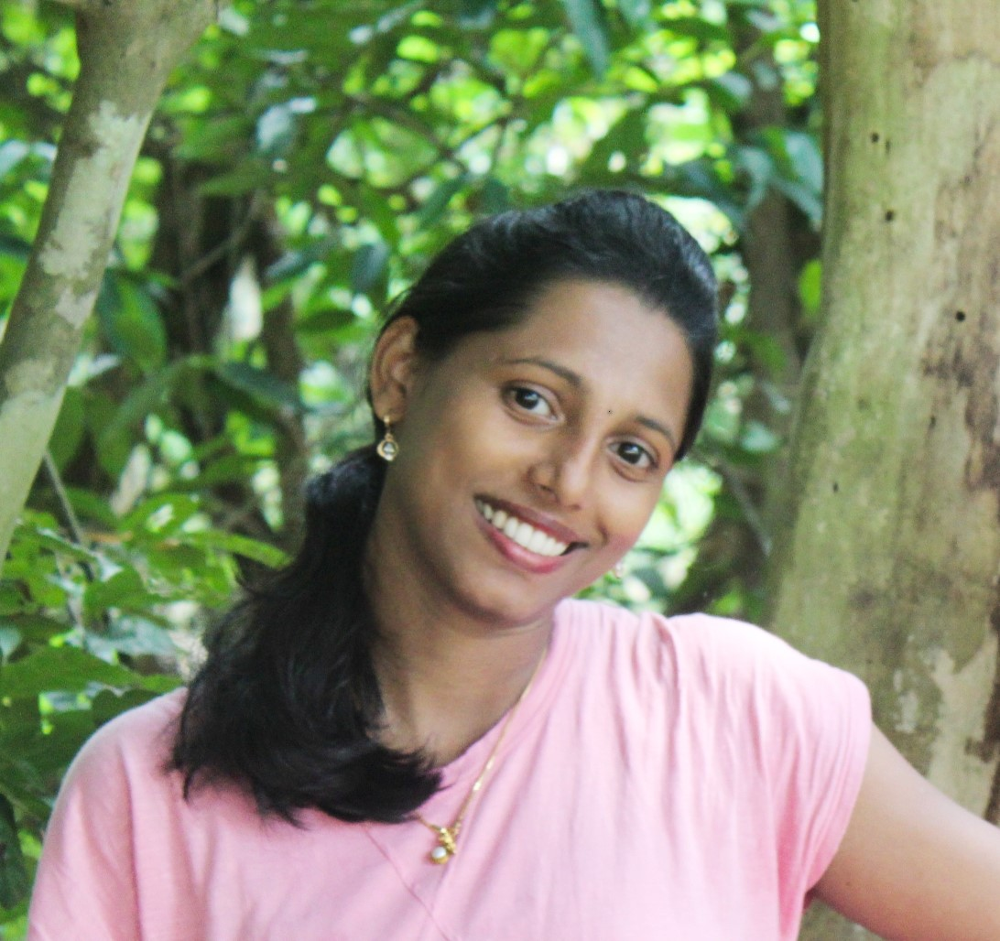

|
I am a Project Research Fellow with project management capability at Queensland University of Technology (QUT), Brisbane . In 2022, I also worked at Inria-Rennes working with the Team SIROCCO under the supervision of Dr. Thomas Maugey .
I have completed my Ph.D from
NIT Calicut ). I am a qualified and experienced project manager (with a scientific background) with a diploma in Project Management. I was in project management roles because of my
intellectual business logic, analytic skills, connections, and experiences with industrial business cases. I have experience working as a project management fellow with the world-renowned institute in France called INRIA.
I have expertise in aligning the objectives of the project with the strategic vision of the organization. My skills are project master planning, project administration, coordination, relationship management, stakeholder engagement,
communication, people skills, conflict resolution skills, organizational skills, scope management, risk management, and schedule and
cost management with official and sensitive documentation. I am also an expert in finance tracking using EVM. I am passionate about managing projects according to agreed timelines, resources, and budgets for
client-focused projects. I know how to make use of her scientific background and research skills in complicated
projects when it comes to addressing non-routine situations or researching to fulfill certain project tasks. I am a subject matter expert when it comes to anything related to project management.
I worked on nationally important projects in the areas of computer vision. I have done my Ph.D. with
Dr. Sudhish N. George.
My Ph.D. is based on computer vision project management.
Before joining NIT Calicut, I graduated in Engineering
and post graduated from Government College of Engineering, Cherthala
with M.Tech
Check out my LinkedIn profile here

|

|